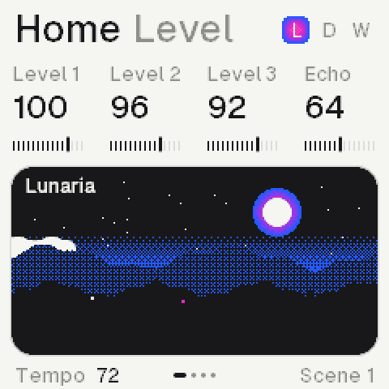

An ambient lofi machine for the M‑VAVE FM‑1.
Volume
- Z–/ S–'The lower keys, F3 to A4
- Q–OThe upper keys, B4 to G5
- 1–=The twelve buttons, FX to REC
- [ ]OCT− and OCT+
- ↑ ↓ ← →Select, then Algorithm
- Shift clickHolds a button down
SynthsEach its own roll
3
Sample, pad, drone, pluck
PatternsA song, switched live
8
Hold Home, press a key
VoicesShared by the three
12
A chord machine on top
Nostalgic sounds at its core, worn soft by tape, codec and a room.
1Keys write
Stopped, a key writes at the cursor; playing, REC records it.
2One job a knob
The same knob does the same thing on every page.
3Tap, again, hold
Tap a page, tap again for its next row, hold for its layer.
4Hold, then act
Hold a key, a sequence or a pattern, then change it.
5Everything undoes
GLO with OCT− undoes, sixteen steps back.
6Nothing hidden
Hold a button and the screen shows what it does.

12345Home The synths, the one sounding lit
- 1TitleThe page in ink, its row in grey
- 2FieldsA label and a value a knob
- 3MeterTicks up to the value
- 4CardsRounded, 6 px apart
- 5LightBlue rim, magenta body, pale core
Pages Press one to see it